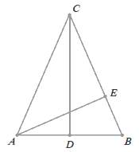
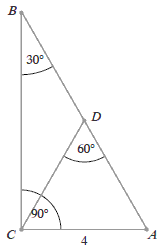
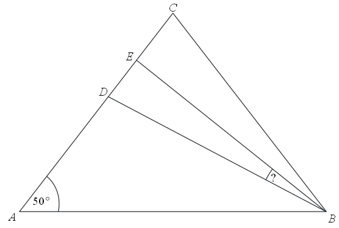

Różne zadania z trójkątów
W trójkącie prostokątnym dwa dłuższe boki mają długości \(\sqrt{5}\) i \(3\). Obwód
tego trójkąta jest równy
A.\( 5+\sqrt{5} \)
B.\( 5\sqrt{5} \)
C.\( 5+2\sqrt{5} \)
D.\( \sqrt{30} \)
A
W trójkącie równoramiennym \( ABC \) dane są \( |AC|=|BC|=5 \) oraz wysokość \(
|CD|=2 \). Podstawa \( AB \) tego trójkąta ma długość
A.\(6 \)
B.\(2\sqrt{21} \)
C.\(2\sqrt{29} \)
D.\(14 \)
B
W trójkącie prostokątnym dwa dłuższe boki mają długości \(5\) i \(7\). Obwód tego
trójkąta jest równy
A.\(16\sqrt{6} \)
B.\(14\sqrt{6} \)
C.\(12+4\sqrt{6} \)
D.\(12+2\sqrt{6} \)
D
Oblicz pole trójkąta równoramiennego \(ABC\), w którym \(|AB| = 24\) i \(|AC| = |BC| = 13\).
\(60\)
Liczby \(4, 10, c\) są długościami boków trójkąta
równoramiennego. Oblicz \(c\).
\(c=10\)
Liczby \(6, 10, c\) są długościami boków trójkąta
równoramiennego. Oblicz \(c\).
\(c=6\) lub \(c=10\)
Liczby \(6, 10, c\) są długościami boków trójkąta
prostokątnego. Oblicz \(c\).
\(c=2\sqrt{34}\) lub \(c=8\)
Liczby \(x - 1, x, 5\) są długościami boków trójkąta
równoramiennego. Oblicz \(x\).
\(x=5\) lub \(x=6\)
Punkt \(S\) jest środkiem wysokości \(CD\) trójkąta równoramiennego \(ABC\), w
którym \(|AC|=|BC|=5\) oraz \(|CD|=4\) (zobacz rysunek).  Odległość punktu \(S\) od ramienia tego trójkąta jest równa
Odległość punktu \(S\) od ramienia tego trójkąta jest równa
Odległość punktu \(S\) od ramienia tego trójkąta jest równa
A.\( \frac{6}{5} \)
B.\( \frac{3}{2} \)
C.\( \frac{12}{5} \)
D.\( \frac{5}{2} \)
A
W trójkącie równoramiennym \(ABC\) o wysokościach \(CD\) i \(AE\) podstawa \(AB\)
ma długość \(8\) cm, a odcinek \(BE\) ma długość \(3\) cm.  Długość odcinka \(AC\) jest równa:
A.\( 6 \) cm
B.\( \frac{32}{3} \) cm
C.\( \frac{28}{3} \) cm
D.\( \frac{33}{2} \) cm
B
Długość odcinka \(BD\) w trójkącie prostokątnym \(ABC\) jest równa: 
A.\( \frac{9\sqrt{3}}{4} \)
B.\( 4 \)
C.\( 4\sqrt{3} \)
D.\( 4\sqrt{2} \)
B
Dany jest trójkąt \(ABC\), gdzie \(A=(-3,-2)\), \(B=(1,-1)\), \(C=(-1,4)\). Wyznacz
równanie symetralnej boku \(AC\) tego trójkąta.
\(y=-\frac{1}{3}x+\frac{1}{3}\)
Dany jest trójkąt równoramienny, w którym ramię o długości \( 20 \) tworzy z
podstawą kąt \( 67{,}5^\circ \). Pole tego trójkąta jest równe
A.\( 100\sqrt{3} \)
B.\( 100\sqrt{2} \)
C.\( 200\sqrt{3} \)
D.\( 200\sqrt{2} \)
B
Punkty \( A=(3,3) \text{ i } B=(9,1) \) są wierzchołkami trójkąta \( ABC \), a
punkt \( M=(1,6) \) jest środkiem boku \( AC \). Oblicz współrzędne punktu przecięcia prostej \( AB
\) z wysokością tego trójkąta, poprowadzoną z wierzchołka \( C \).
\((-2{,}4;\ 4{,}8)\)
Na trójkącie o bokach długości \(\sqrt{7}, \sqrt{8}, \sqrt{15}\) opisano okrąg.
Oblicz promień tego okręgu.
\(r=\frac{\sqrt{15}}{2}\)
Długości przyprostokątnych trójkąta prostokątnego są równe \(4\) i \(6\). Środkowa
tego trójkąta poprowadzona z wierzchołka kąta prostego ma długość
A.\( \sqrt{13} \)
B.\( \sqrt{52} \)
C.\( 5 \)
D.\( 2 \)
A
W trójkącie równoramiennym \(ABC\) spełnione są warunki: \(|AC|=|BC|\),
\(|\sphericalangle CAB|=50^\circ \). Odcinek \(BD\) jest dwusieczną kąta \(ABC\), a odcinek \(BE\)
jest wysokością opuszczoną z wierzchołka \(B\) na bok \(AC\). Miara kąta \(EBD\) jest równa 
A.\( 10^\circ \)
B.\( 12{,}5^\circ \)
C.\( 13{,}5^\circ \)
D.\( 15^\circ \)
D
Wyznacz równanie osi symetrii trójkąta o wierzchołkach \(A = (−2, 2)\), \(B = (6, −
2)\), \(C = (10,6)\).
\(y=-3x+16\)